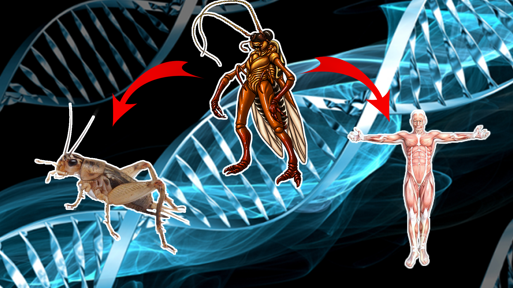
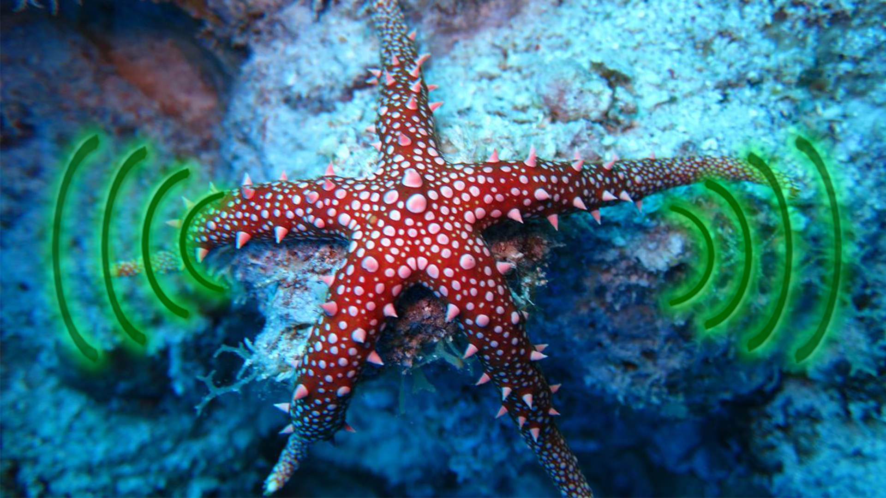

Le Blobus Margasus
Les chercheurs Marvin Louissaint et Gaspard Bureau ont fait une découverte majeur dans le monde biologique : Le Blobus Margasus !
C'est quoi ?
Le Blobus Margasus est un être unicellulaire dérivé du Blob. Là où le Blob ne pouvait pas dépasser les 7cm , le Blobus Margasus peut mesurer jusqu'à 40cm de diamètre lorsqu'il se nourrit assez. Il est omnivore à tendance carnivore.
Ses origines
Cette espèce vivait généralement dans les forêts sombres et humides où il se nourissait principalement d'insectes et parfois de rongeurs à l'aide d'un phéromone qui les attires. Mais désormais, la pollution et la déforestation provoque une disparition de ses proies, ce qui le pousse à s'aventurer dans les villes.

Un danger ?
Maintenant présent en ville, le Blobus Margasus peut trouver plus de nourriture (comme des déchets humains) et donc peut prendre un diamètre plus important et peut devenir un danger pour nos animaux de compagnies.
De plus, son corps sécrète un acide gastrique très puissant capable de digérer n'importe quelle matière organique en un peu plus de 10min.

À lire aussi
L'ancêtre incroyable entre les humains et les insectes !

Comment les étoiles de mers se localisent dans leur environnement ?
Crédits
Ce site internet est un projet d'art plastique de seconde par Marvin Louissaint et Gaspard Bureau, lycéens au Lycée Jean-Macé à Niort.